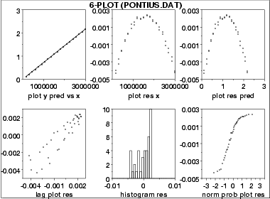

1.
Exploratory Data Analysis
1.3.
EDA Techniques
1.3.3.
Graphical Techniques: Alphabetic
|
Purpose:
Graphical Model Validation
|
The 6-plot is a collection of 6 specific graphical techniques
whose purpose is to assess the validity of a Y versus X fit.
The fit can be a linear fit, a non-linear fit, a LOWESS
(locally weighted least squares) fit, a spline fit, or any
other fit utilizing a single independent variable.
The 6 plots are:
- Scatter plot of the response
and predicted values versus the independent
variable;
- Scatter plot of the residuals
versus the independent variable;
- Scatter plot of the residuals
versus the predicted values;
- Lag plot of the residuals;
- Histogram of the residuals;
- Normal probability plot of the
residuals.
|
|
Sample Plot
|

This 6-plot, which followed a linear fit, shows that the
linear model is not adequate. It suggests that a quadratic
model would be a better model.
|
Definition:
6 Component Plots
|
The 6-plot consists of the following:
- Response and predicted values
- Vertical axis: Response variable, predicted values
- Horizontal axis: Independent variable
- Residuals versus independent variable
- Vertical axis: Residuals
- Horizontal axis: Independent variable
- Residuals versus predicted values
- Vertical axis: Residuals
- Horizontal axis: Predicted values
- Lag plot of residuals
- Vertical axis: RES(I)
- Horizontal axis: RES(I-1)
- Histogram of residuals
- Vertical axis: Counts
- Horizontal axis: Residual values
- Normal probability plot of residuals
- Vertical axis: Ordered residuals
- Horizontal axis: Theoretical values from a
normal N(0,1) distribution for ordered residuals
|
|
Questions
|
The 6-plot can be used to answer the following questions:
- Are the residuals approximately normally distributed
with a fixed location and scale?
- Are there outliers?
- Is the fit adequate?
- Do the residuals suggest a better fit?
|
Importance:
Validating Model
|
A model involving a response variable and a single independent
variable has the form:
\[ Y_{i} = f(X_{i}) + E_{i} \]
where Y is the response variable, X is the independent
variable, f is the linear or non-linear fit function, and
E is the random component. For a good model, the
error component should behave like:
- random drawings (i.e., independent);
- from a fixed distribution;
- with fixed location; and
- with fixed variation.
In addition, for fitting models it is usually further assumed
that the fixed distribution is normal and the fixed location
is zero. For a good model the fixed variation
should be as small as possible. A necessary component
of fitting models is to verify these assumptions for the
error component and to assess whether the variation for
the error component is sufficiently small. The histogram,
lag plot, and normal probability plot are used to
verify the fixed distribution, location, and variation
assumptions on the error component. The plot
of the response variable and the predicted values versus
the independent variable is used to assess whether the
variation is sufficiently small. The plots of the
residuals versus the independent variable and the predicted
values is used to assess the independence assumption.
Assessing the validity and quality of the fit in terms of
the above assumptions is an absolutely vital part of
the model-fitting process. No fit should be considered
complete without an adequate model validation step.
|
|
Related Techniques
|
Linear Least
Squares
Non-Linear Least
Squares
Scatter Plot
Run Sequence Plot
Lag Plot
Normal Probability Plot
Histogram
|
|
Case Study
|
The 6-plot is used in the
Alaska pipeline
data case study.
|
|
Software
|
It should be feasible to write a macro for the 6-plot in any
general purpose statistical software program that supports
the capability for multiple plots per page and supports the
underlying plot techniques.
|